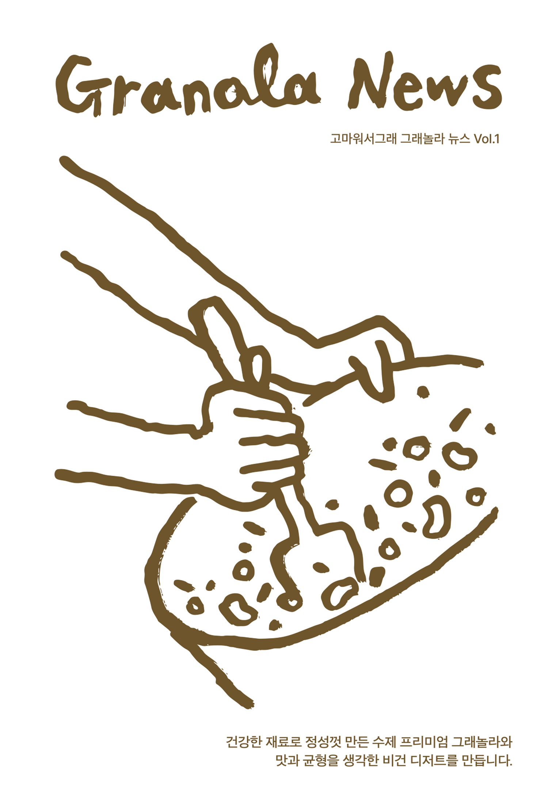
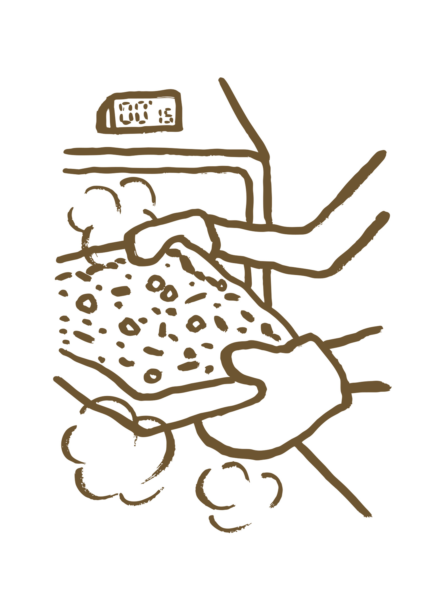
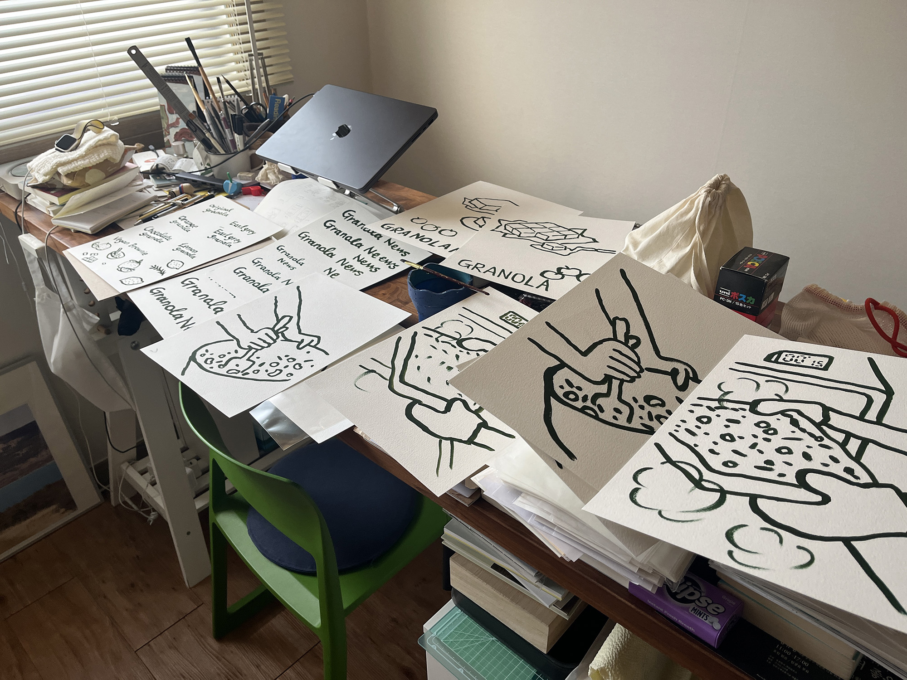
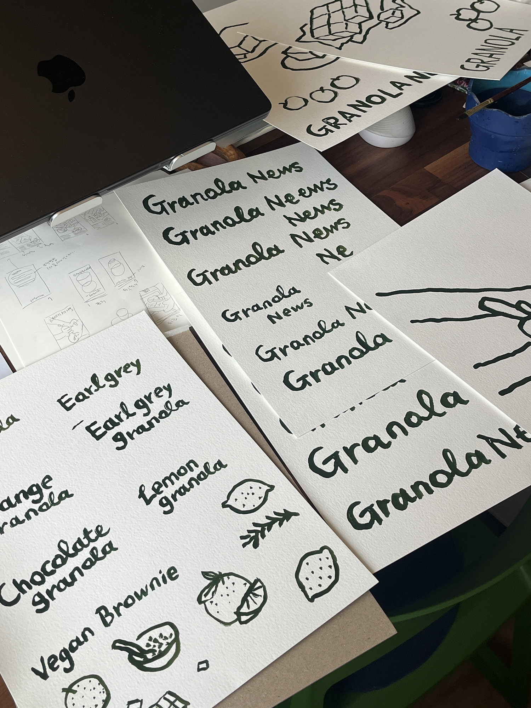
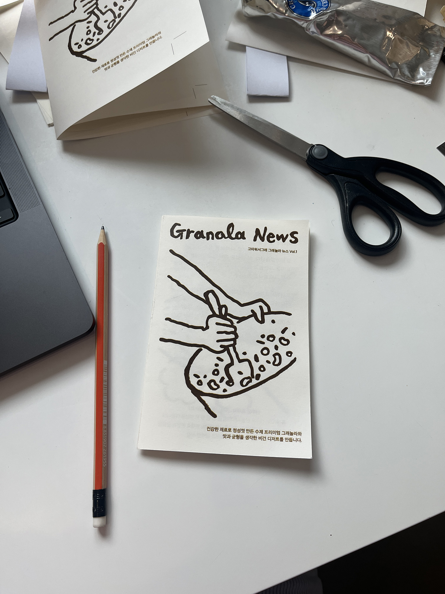
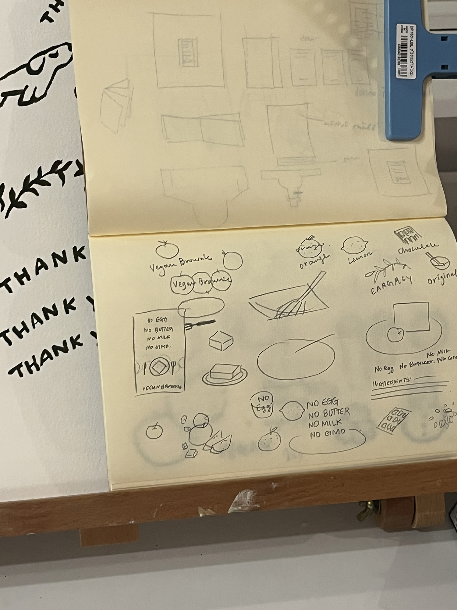
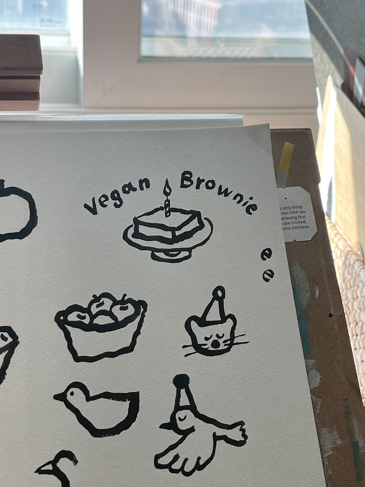
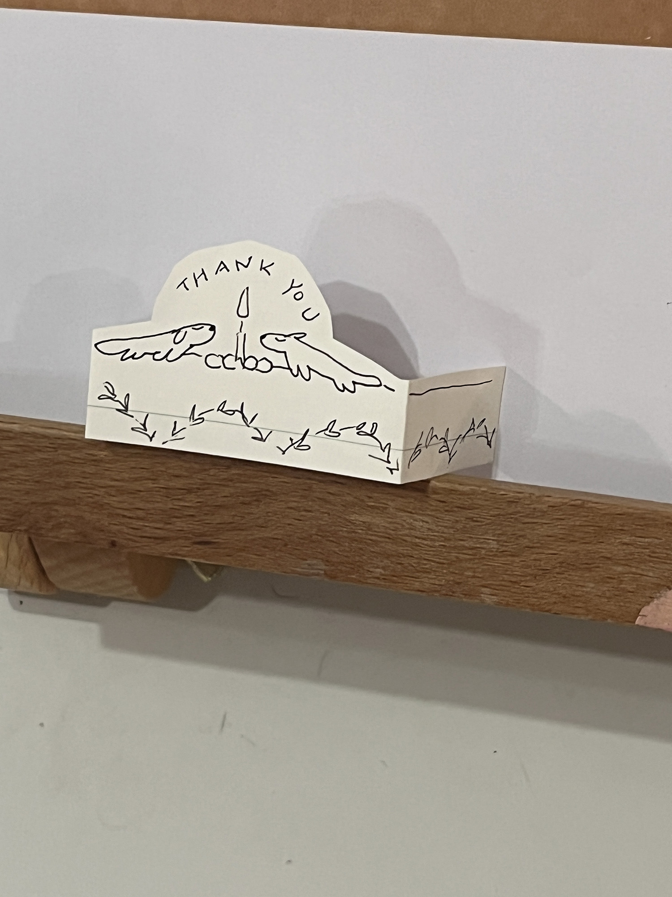
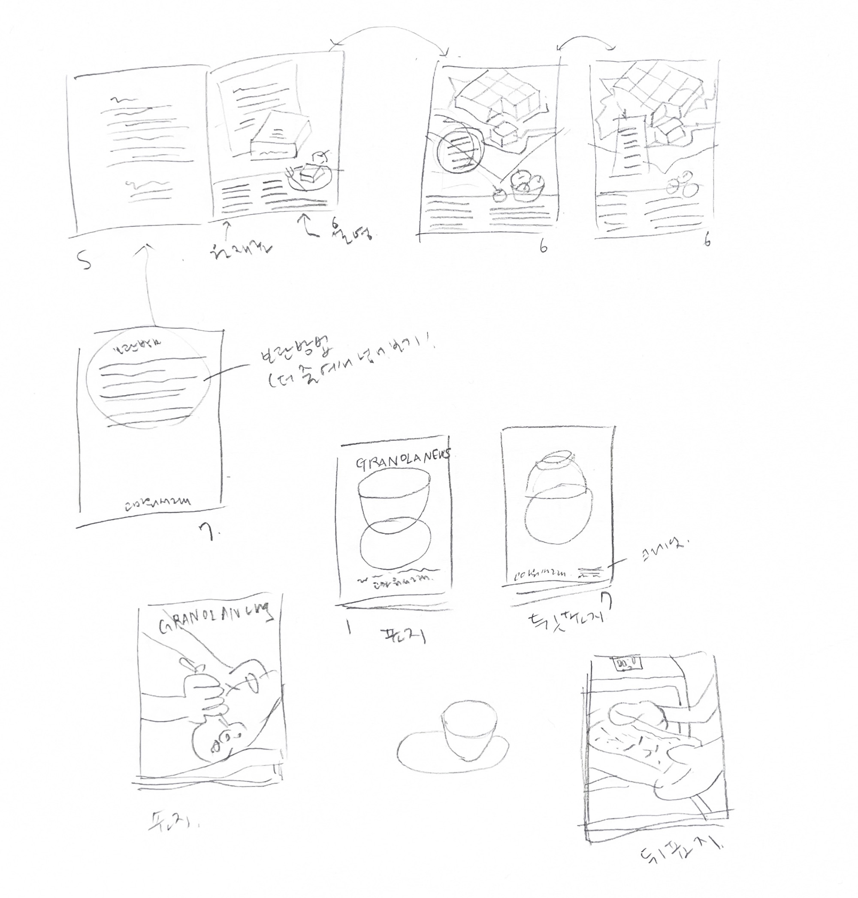
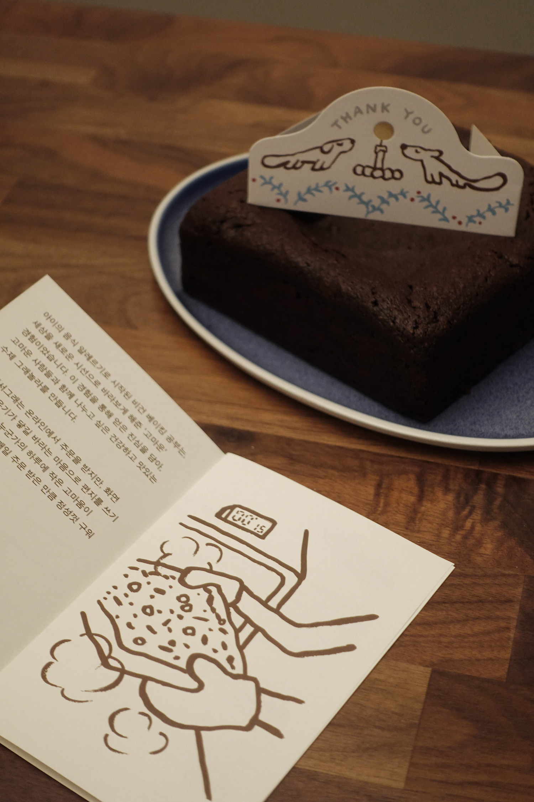
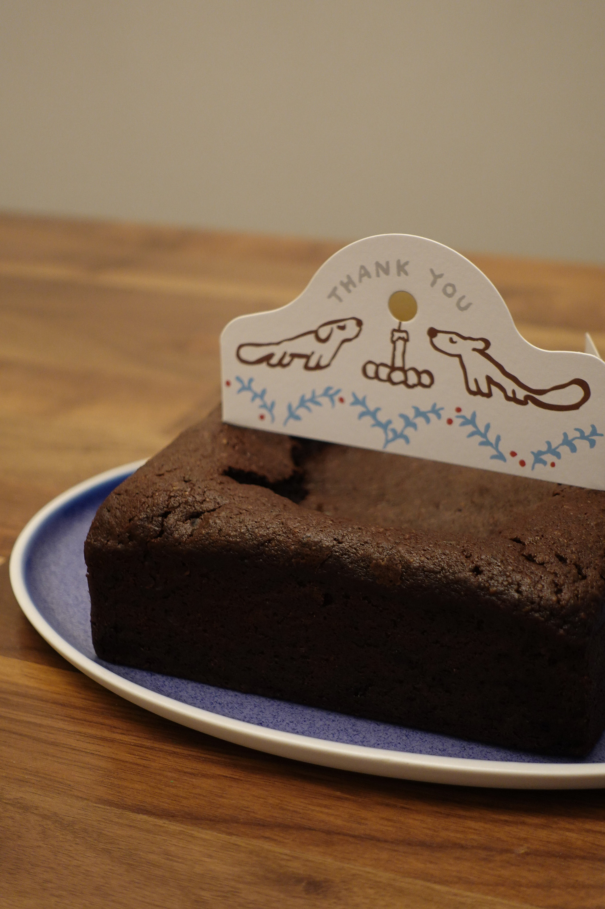
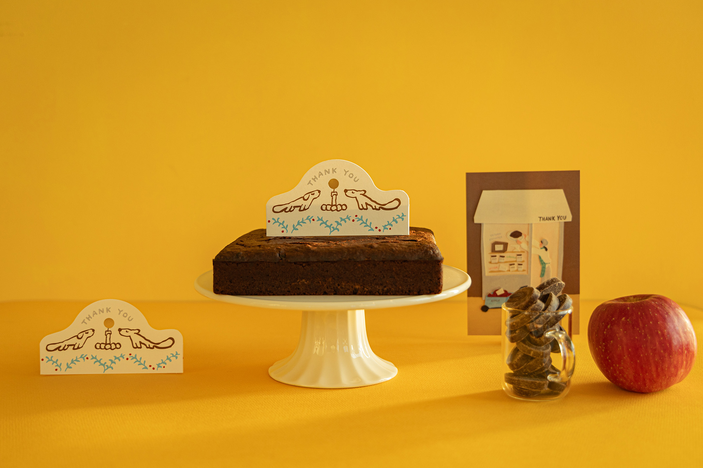
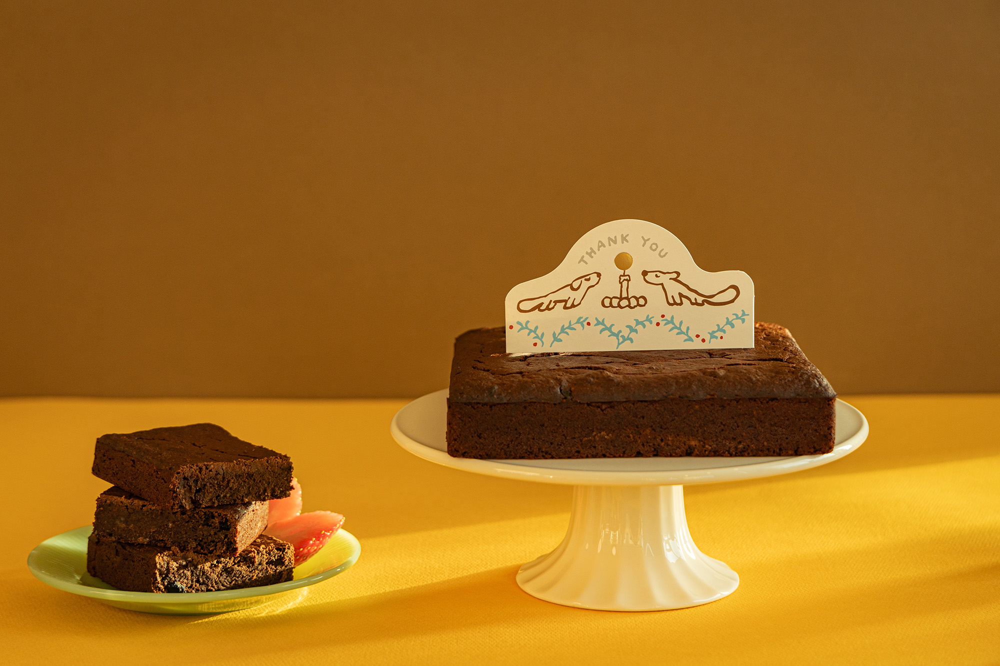
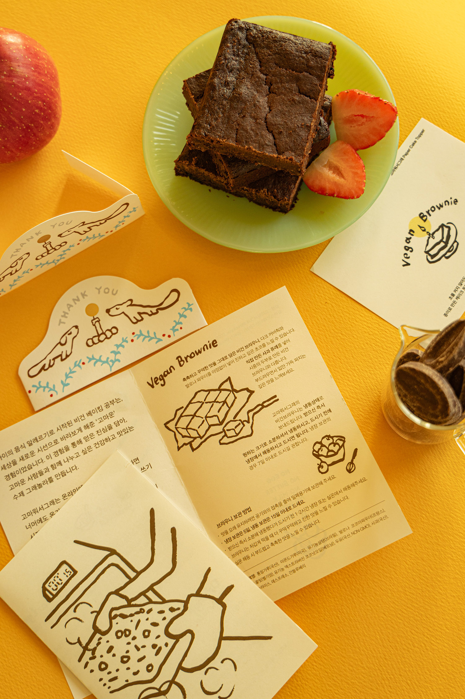
고마워서그래에서 초코브라우니의 패키지를 리뉴얼하면서 <그래놀라 뉴스>를 만들어서 배포하기로 하였고, 그 1호를 제작했습니다. 손수 만든 비건 브라우니와 좋은 재료로만 써서 만든 그래놀라는 원래도 인기가 좋았지만, 좀더 재밌는 활동을 해보고자 만들게 되었습니다. 저는 일러스트레이션 작업과 디자인을 맡아서 진행하였고요. 두란님이 그래놀라를 굽는 것을 몇 번 직접 보고나니, 그림 역시도 무조건 아날로그한 방식으로 해야겠다고 생각했습니다. <그래놀라뉴스>는 조그만 사이즈이지만, 그림은 훨씬 크게 그렸어요. 약간은 구불구불하기도 하고 손 맛이 나도록, 즐겁게 작업했습니다.
As part of a package renewal for their chocolate brownie, Gomawooseograe decided to create and distribute Granola News, and I produced the first issue. Their handmade vegan brownies and granola made with only quality ingredients were already popular, but they wanted to try something more fun. I handled the illustration and design. After watching Duran bake granola several times in person, I felt the artwork absolutely had to be made in an analog way. Granola News is small in size, but the illustrations were drawn much larger — a little wobbly, with a handmade feel, and made with joy.